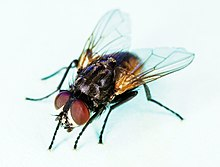

The housefly (Musca domestica) is a fly of the suborder Cyclorrhapha. It is believed to have evolved in the
Cenozoic Era, possibly in the Middle East, and has spread all over the world as a commensal of humans. It is the
most common fly species found in houses. Adults are gray to black, with four dark, longitudinal lines on the
thorax, slightly hairy bodies, and a single pair of membranous wings. They have red eyes, set farther apart in
the slightly larger female.
